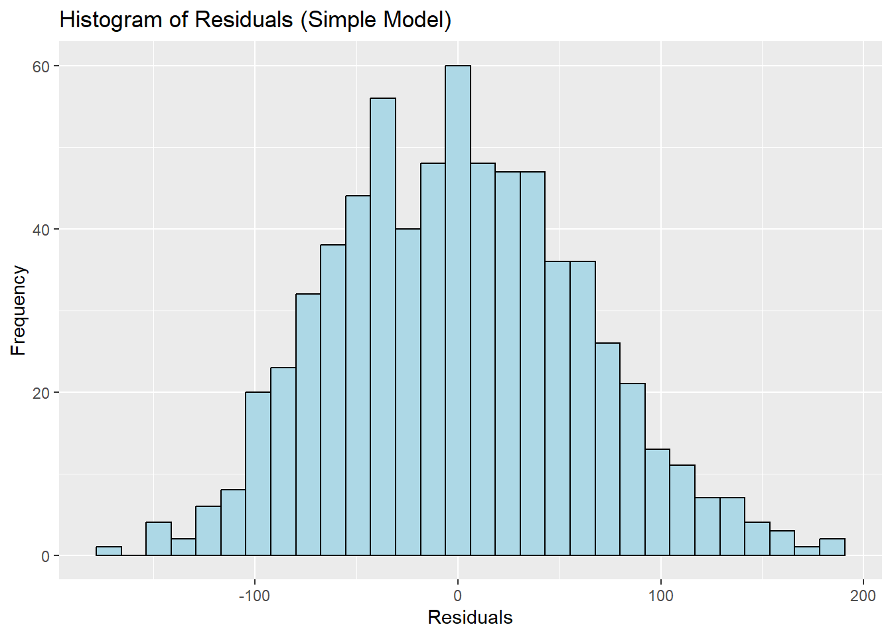

This code analyzes admissions data, focusing on predicting SAT Math scores using SAT Verbal scores and high school class size. The analysis employs linear regression models, including simple linear regression, multiple linear regression, correlation assessments, and visualizations to explore the relationships between these variables.
Here is the admissions data and you can download the script to run in R here
Load Necessary Libraries
library(foreign) # For reading .sav fileslibrary(ggplot2) # For visualizationlibrary(dplyr) # For data manipulation
Attaching package: 'dplyr'
The following objects are masked from 'package:stats':
filter, lag
The following objects are masked from 'package:base':
intersect, setdiff, setequal, union
library(gtsummary) # For creating regression tableslibrary(officer) # For exporting to Wordlibrary(flextable) # For table formatting
Attaching package: 'flextable'
The following object is masked from 'package:gtsummary':
continuous_summary
Load and Inspect Data
admissions <-read.spss("data/admissions.sav", to.data.frame =TRUE)head(admissions) # Display first few rows
row_number paiddeposit scholarship_yes_no Type_of_scholarship_offered Female
1 7 1 0 0
2 12 0 0 0
3 19 1 0 0
4 23 1 0 0
5 25 0 0 0
6 28 0 0 1
Race HS_rank HS_class_size HS_Quintile HS_CODE
1 white 190 281 4/5 392835
2 white 111 223 3/5 393655
3 white 109 371 2/5 51830
4 Asian 88 266 2/5 390527
5 white NA NA 390870
6 white 59 382 1/5 392655
HS_NAME SAT_verbal ACT Honors_college_eligible
1 FRANKLIN_REGIONAL_SR_HI 560 NA no
2 CENTRAL_CATHOLIC_HIGH_S 600 NA no
3 WESTCHESTER_HIGH_SCHOOL 550 NA no
4 CEDAR_CLIFF_HIGH_SCHOOL 520 NA no
5 HOLY_GHOST_PREPARATORY 650 NA no
6 PENN_MANOR_HIGH_SCHOOL 460 20 no
distancefromPitt state Number_of_family_alumni father_alumni grand_alumni
1 14.228946 PA 0 0 0
2 7.162134 PA 0 0 0
3 232.363382 PA 0 0 0
4 163.462296 PA 0 0 0
5 261.534151 PA 0 0 0
6 192.493359 PA 0 0 0
mother_alumni sibling_alumni step_parent_alumni other_family_alumni
1 0 0 0 0
2 0 0 0 0
3 0 0 0 0
4 0 0 0 0
5 0 0 0 0
6 0 0 0 0
SAT_composite ACT_as_SAT Max_Test_Score Training from_PA
1 1180 NA 1180 0 1
2 1150 NA 1150 0 1
3 1190 NA 1190 0 1
4 1140 NA 1140 0 1
5 1200 NA 1200 0 1
6 940 950 950 0 1
alumniYN SAT_math
1 Family is not an alum 620
2 Family is not an alum 550
3 Family is not an alum 640
4 Family is not an alum 620
5 Family is not an alum 550
6 Family is not an alum 480
ggplot(admissions_clean, aes(x = std_fitted_simple, y = std_residuals_simple)) +geom_point(color ="blue") +geom_hline(yintercept =0, linetype ="dashed", color ="red") +labs(title ="Standardized Residuals vs. Standardized Fitted Values (Simple Model)",x ="Standardized Fitted Values", y ="Standardized Residuals")
Interpretation:
Residuals are fairly symmetrically distributed around zero, suggesting the linear model is appropriate.
No major patterns in residuals indicate homoscedasticity.
Histogram of Residuals
ggplot(admissions_clean, aes(x = residuals_simple)) +geom_histogram(bins =30, fill ="lightblue", color ="black") +labs(title ="Histogram of Residuals (Simple Model)", x ="Residuals", y ="Frequency")

Interpretation:
Residuals follow a normal-like distribution, supporting the assumption of normality.
Correlation Analysis
cor(admissions_clean[, c("SAT_math", "SAT_verbal", "fitted_simple", "residuals_simple")], use ="complete.obs")
Strong positive correlation between SAT Math and SAT Verbal (r ≈ 0.45).
Fitted values highly correlate with SAT Verbal, confirming its predictive power.
Multiple Linear Regression: SAT Math ~ SAT Verbal + HS Class Size
multiple_model <-lm(SAT_math ~ SAT_verbal + HS_class_size, data = admissions_clean)summary(multiple_model)
Call:
lm(formula = SAT_math ~ SAT_verbal + HS_class_size, data = admissions_clean)
Residuals:
Min 1Q Median 3Q Max
-165.924 -44.589 -1.418 40.825 197.261
Coefficients:
Estimate Std. Error t value Pr(>|t|)
(Intercept) 314.14654 19.47735 16.129 < 2e-16 ***
SAT_verbal 0.44864 0.03401 13.192 < 2e-16 ***
HS_class_size 0.06030 0.01295 4.656 3.88e-06 ***
---
Signif. codes: 0 '***' 0.001 '**' 0.01 '*' 0.05 '.' 0.1 ' ' 1
Residual standard error: 60.52 on 688 degrees of freedom
Multiple R-squared: 0.2266, Adjusted R-squared: 0.2244
F-statistic: 100.8 on 2 and 688 DF, p-value: < 2.2e-16
Interpretation:
HS Class Size has a small but significant positive effect (Estimate = 0.06030, p < 0.001).
Explained variance increases to 22.4%, showing a slight improvement over the simple model.
Visualization of SAT Verbal Effect
ggplot(admissions_clean, aes(x = SAT_verbal, y = SAT_math)) +geom_point(alpha =0.5) +geom_smooth(method ="lm", col ="blue") +labs(title ="Effect of SAT Verbal on SAT Math", x ="SAT Verbal", y ="SAT Math")
`geom_smooth()` using formula = 'y ~ x'
Generate Regression Summary Table
mlr_table <- multiple_model %>%tbl_regression(label =list(SAT_verbal ="SAT Verbal Score", HS_class_size ="High School Class Size")) %>%modify_caption("Table 1: Multiple Linear Regression Results") %>%add_n()
Save Table to Word
mlr_flextable <-as_flex_table(mlr_table)doc <-read_docx()doc <-body_add_flextable(doc, value = mlr_flextable)print(doc, target ="MLR_Results.docx")
Conclusion
Key Findings:
SAT Verbal scores significantly predict SAT Math scores, explaining ~20% of the variance.
Adding HS Class Size improves the model slightly, raising the explained variance to 22.4%.
Both models suggest a linear relationship, with residuals showing normality and no major violations.
Implications:
Schools aiming to improve SAT Math scores may focus on strengthening verbal skills.
Class size appears to play a small but relevant role in performance.
Further research could explore additional predictors (e.g., socioeconomic factors, study habits).